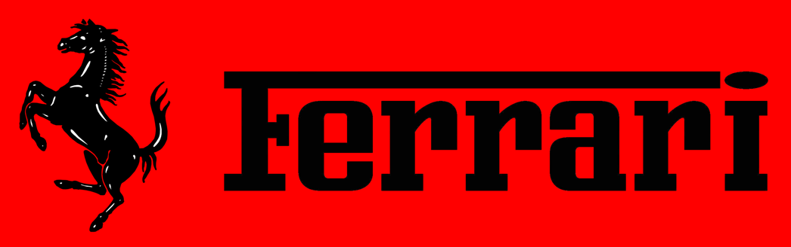
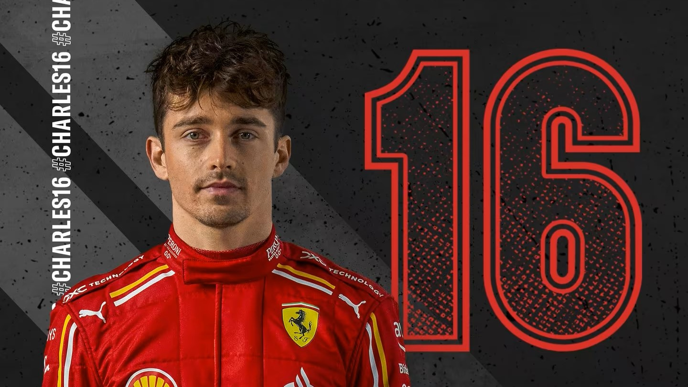
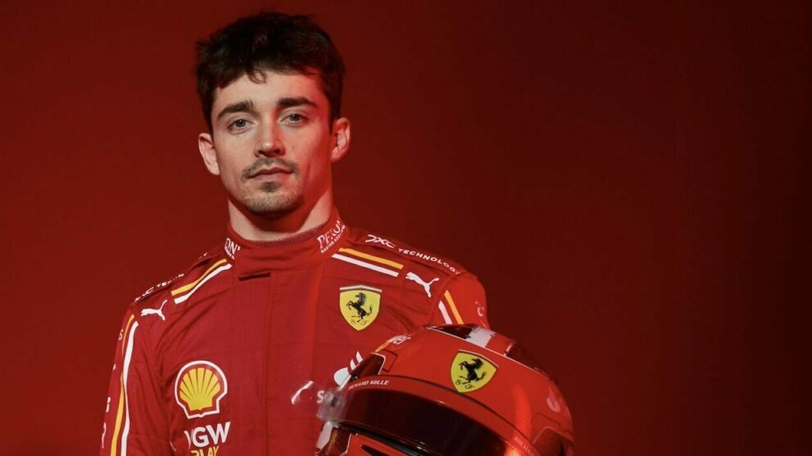
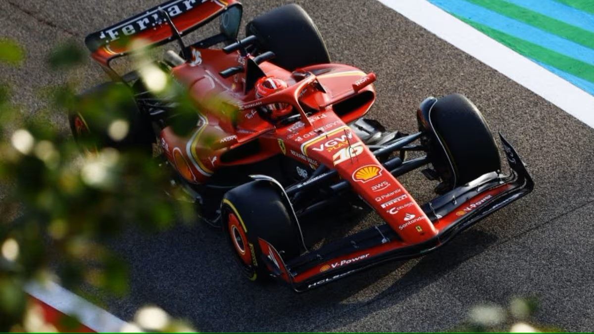
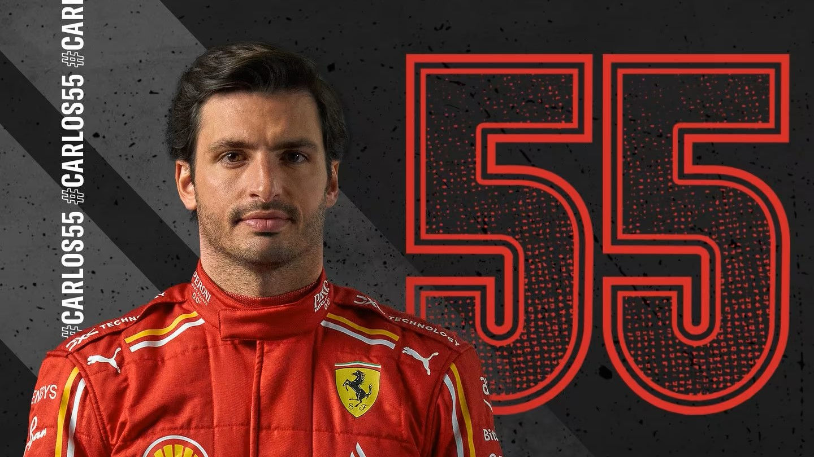
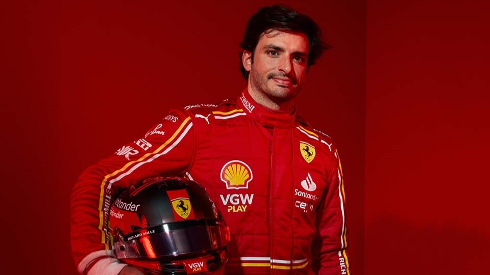
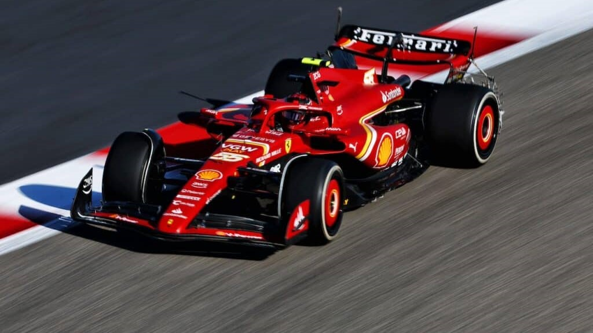
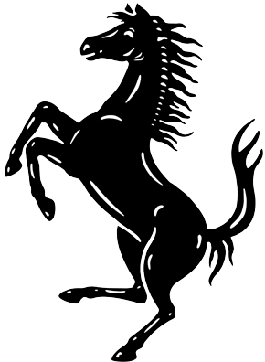

<!DOCTYPE html>
<html lang="en">
<head>
    <meta charset="UTF-8">
    <meta name="viewport" content="width=device-width, initial-scale=1.0">
    <title>Il team</title>
    <link rel="stylesheet" href="CSS/stile.css">
</head>
</html>
<header>
    
    <a href="login.html"> </a>
</header>
<nav>
    <a href="./home.html" style="text-decoration: none;">
        <button class="pulsante"> Home</button>
    </a>
    <a href="./teampr.html" style="text-decoration:none;">
        <button class="pulsante"> Il nostro direttore tecnico </button>
    </a>
        
        <a href="./storia.html" style="text-decoration: none;">
            <button class="pulsante"> La nostra storia </button>
        </a>
        <a href="./shop.html" style="text-decoration: none;">
            <button class="pulsante"> Shop </button>
        </a>  
        
        <h1 class="titoloP">
            <strong>I NOSTRI PILOTI</strong>
    
        </h1>
    </nav>

    

    
        <h2 class="sottoP">
            <strong> CHARLES LECLERC </strong>
        </h2>


    <p class="piloti"> 
        Charles Leclerc, nato il 16 ottobre 1997 a Monte Carlo, è un pilota automobilistico monegasco
        attualmente in forza alla Scuderia Ferrari in Formula 1. La sua carriera nel motorsport è iniziata nel karting,
        dove ha mostrato un talento precoce. Nel corso degli anni, ha progredito attraverso le categorie junior,
        vincendo il campionato GP3 nel 2016 e il campionato di Formula 2 nel 2017. Il suo debutto in Formula 1
        è avvenuto nel 2018 con Alfa Romeo Sauber, dove ha dimostrato capacità di guida impressionanti. Nel 2019, è stato promosso alla Scuderia Ferrari, diventando il secondo pilota più giovane nella storia del team. Leclerc è noto per la sua velocità in pista e il suo talento naturale,
        dimostrando abilità promettenti nel corso della sua giovane carriera in Formula 1. </p>
    
    
    

   
    <br>
    
    <h3 style="font-size: 150%; font-family: lucida console ; color: #ff0000; text-align: center; ">
        <strong> Statistiche </strong>
    </h3>


<p class="piloti"> 
    Charles Leclerc, ha partecipato a 130 gran premi in f1 di cui 109 con la scuderia di maranello, ha collezzionato 23 pole position e ha vinto 5 gare.
    Ha raggiunto il podio in 20 occasioni mentre ha fatto segnare 9 volte il giro veloce in gara.
    In totale sono 1150 i punti guadagnati mentre i giri completati sono 6791.

</p>
<br>

<hr style="color: #ff0000;">

<br>
<br>

<h2 style="font-size: 180%; font-family: lucida console ; color: #ff0000; text-align: center; ">
    <strong> CARLOS SAINZ </strong>
</h2>


<p class="piloti"> 

    Carlos Sainz Jr., nato il 1º settembre 1994 a Madrid, è un pilota automobilistico spagnolo che attualmente corre per la Scuderia Ferrari
    in Formula 1. La sua passione per il motorsport è stata evidente fin dalla giovane età, seguendo le orme del padre, Carlos Sainz Sr,
    anch'egli un famoso pilota rally. Sainz ha iniziato la sua carriera nel karting e ha rapidamente scalato le categorie junior, dimostrando abilità notevoli
    e costanza nelle prestazioni. Ha debuttato in Formula 1 nel 2015 con la squadra Toro Rosso, prima di passare alla Renault nel 2017 e poi alla McLaren nel 2019.
    Durante il suo periodo con la McLaren, ha consolidato la sua reputazione come pilota solido e competitivo,
    ottenendo risultati consistenti e guadagnandosi il rispetto all'interno del paddock. Nel 2021, è stato annunciato il suo trasferimento alla Scuderia Ferrari,
    dove si unisce come pilota ufficiale per la stagione 2021 di Formula 1. Sainz porta con sé esperienza, determinazione e una forte etica lavorativa,
    e si prevede che contribuirà al continuo sviluppo e successo della Ferrari in pista. </p>





<br>

<h3 style="font-size: 150%; font-family: lucida console ; color: #ff0000; text-align: center; ">
<strong> Statistiche </strong>
</h3>


<p class="piloti"> 
Carlos Sainz, ha partecipato a 180 gran premi in f1 di cui 70 con la scuderia di maranello, ha collezzionato 5 pole position e ha vinto 3 gare.
Ha raggiunto il podio in 21 occasioni mentre ha fatto segnare 3 volte il giro veloce in gara.
In totale sono 1051 i punti guadagnati mentre i giri completati sono più di 10000.

</p>
<br>
<br>
<footer class="footer">
    

</footer>

    
